<html>
<head>
  <meta charset="utf-8">
  <title>なにやってんだろ...とSPAで疲れたときの話 @Yahoo!Japan 2016.07.04</title>
  <link rel="stylesheet" href="/slides/src/talkie.min.css">
  <link rel="stylesheet" href="/slides/src/talkie-default.min.css">
  <link rel="stylesheet" href="https://cdnjs.cloudflare.com/ajax/libs/highlight.js/8.9.1/styles/monokai_sublime.min.css">
</head>
<body>

<script layout="kaizen" type="text/x-markdown">
# なにやってんだろ...とSPAで疲れたときの話

2016.07.04 - Yahoo!Japan社内勉強会 - [@t32k](https://twitter.com/t32k)
</script>

<script layout="bullets" type="text/x-markdown">
# t32kデス。

- [Kaizen Platform, Inc.](https://kaizenplatform.com/ja/)
- Front-end Developer
- [t32k.me](http://t32k.me/)
</script>

<script layout="bullets" type="text/x-markdown">
## About Kaizen Platform

<a href="https://kaizenplatform.com/ja/about_growth_hacker.html"></a>
</script>

<script layout
        backface="/slides/src/img/sskp.png"
        backface-filter="blur(0) brightness(1)">
</script>

<script invert
        layout="bullets"
        type="text/x-markdown"
        backface="/slides/src/img/sskp.png"
        backface-filter="blur(2px) brightness(0.4)">
## KAIZEN DASHBOARD

- Angular.js v1.x
- Jade/Slim
- SCSS
- CoffeeScript
- webpack/Gulp
</script>

<script invert
        layout="bullets"
        type="text/x-markdown"
        backface="./img/sskp.png"
        backface-filter="blur(2px) brightness(0.3)">
## KAIZEN DASHBOARD

- Angular.js v1.x -> v2.x or React
- Jade/Slim -> Pug(Jade)
- SCSS -> PostCSS?
- CoffeeScript -> ECMAScript 201x
- webpack/Gulp -> ?
</script>

<script layout="title" type="text/x-markdown">
## (´・ω・｀)ﾂｶﾚﾀ
</script>

<script layout="bullets" type="text/x-markdown">
## 疲れることに定評のあるt32k

<a href="http://t32k.me/mol/log/npm-run-script/">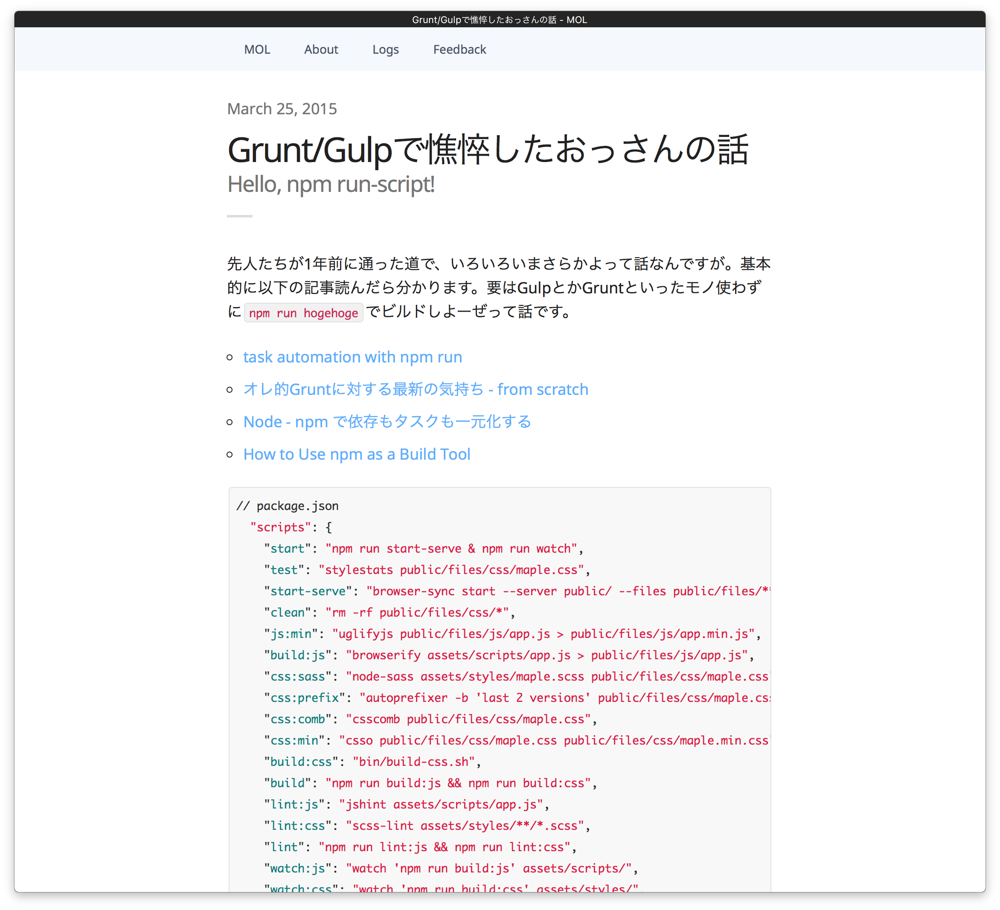</a>
</script>

<script layout="bullets" type="text/x-markdown">
## SPA必要なの？問題

<a href="http://anond.hatelabo.jp/20160521163144">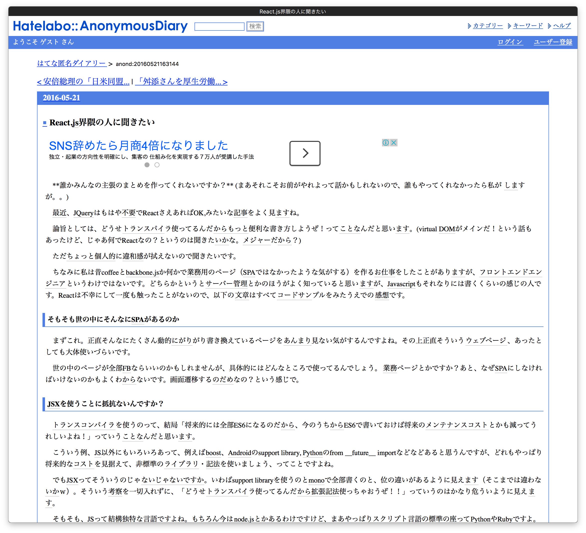</a>
</script>

<script layout="cover" type="text/x-markdown">
## SPAである理由
> ちゃんとしたWebアプリケーションのUIを考えたら  
SPAにならざるを得ないということが多い  
― <small>[SPAである価値 - nobkzのブログ](http://nobkz.hatenadiary.jp/entry/2016/06/02/005114)</small>
</script>

<script layout="bullets" type="text/x-markdown">
## アプリのような表現力を得るため
</script>

<script invert
        layout="bullets"
        type="text/x-markdown"
        backface="./img/sskp.png"
        backface-filter="blur(2px) brightness(0.3)">
## KAIZEN DASHBOARDを見てみると

- toBのデスクトップ・アプリケーション
- なんか硬いザ・ギョーム・アプリケーション
- SPAで作ってるのにモッサリとした動作
- SPAの複雑さで開発は疲労困憊
</script>

<script layout="bullets" type="text/x-markdown">
## 我々はユーザーに価値を提供できているのか？

<small>※ AngularからReactに作り変えてサービスがヒットするならやるけど...</small>
</script>

<!-=====================================================================================->

<script invert layout="cover" type="text/x-markdown">
## アプリのような使いやすさとは？
</script>

<script layout="row" type="text/x-markdown">
<div style="flex-basis:30%;margin-right:0;">
<a href="https://www.amazon.co.jp/dp/4861009383/?tag=warikiru-22"></a>
</div>
<div style="flex-basis:70%">
<p style="margin-bottom:30px">（iPhoneの使いやすさに関して）指とグラフィックとの高い動きの連動性が道具的存在となり、自己帰属感ををもたらす。そしてその結果、道具としての透明性を得るためだ</p>
<p><small>― <a href="https://www.amazon.co.jp/dp/4861009383/?tag=warikiru-22">融けるデザイン ハード×ソフト×ネット時代の新たな設計論</a></small></p>
</div>
</script>

<script layout="cover" type="text/x-markdown">
## 自己帰属感・透明性・身体の拡張性
</script>

<script layout="cover" type="text/x-markdown">
# Flow
</script>

<script layout="row" type="text/x-markdown">
<div style="flex-basis:30%;margin-right:0;">
<a href="https://www.amazon.co.jp/dp/4790714799/?tag=warikiru-22">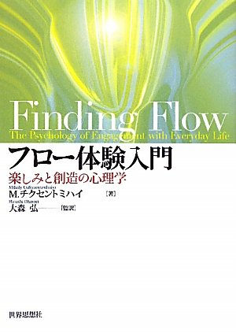</a>
</div>
<div style="flex-basis:70%">
<p style="margin-bottom:30px">フローとは、人間がそのときしていることに、完全に浸り、精力的に集中している感覚に特徴づけられ、完全にのめり込んでいて、その過程が活発さにおいて成功しているような活動における、精神的な状態をいう。ZONE、ピークエクスペリエンスとも呼ばれる </p>
<p><small>― <a href="https://www.amazon.co.jp/dp/4790714799/?tag=warikiru-22">フロー体験入門―楽しみと創造の心理学</a></small></p>
</div>
</script>

<script layout="bullets" type="text/x-markdown">
## Flow Components
- 直接的で即座な反応 <small style="font-size:50%">活動の過程における成功と失敗が明確で、行動が必要に応じて調節される</small>
- 状況や活動を自分で制御している感覚
</script>

<script layout="cover" type="text/x-markdown">
## 目標

<p style="margin: 30px 210px;">
トリガーに対するフィードバックの<b style="font-weight:bold;">プロセス</b>を表示することで、ユーザーの理解を促進する。適切で即座なフィードバックを返すことでユーザーをフロー（に近い）状態にさせる
</p>
</script>

<script layout="bullets" type="text/x-markdown">
<iframe width="853" height="480" src="https://www.youtube.com/embed/cQzien5H2Do?rel=0&amp;controls=0&amp;showinfo=0" frameborder="0" allowfullscreen></iframe>
</script>

<script layout="bullets" type="text/x-markdown">
## Material Design Motion
- Meaningful transitions <small style="font-size:50%">意味のあるトランジションを心がけよう</small>
- Visual continuity <small style="font-size:50%">ビジュアルの一貫性に気をつけよう</small>
- Delightful details <small style="font-size:50%">遊び心もあればいいよね！</small>
</script>


<script layout="bullets" type="text/x-markdown">
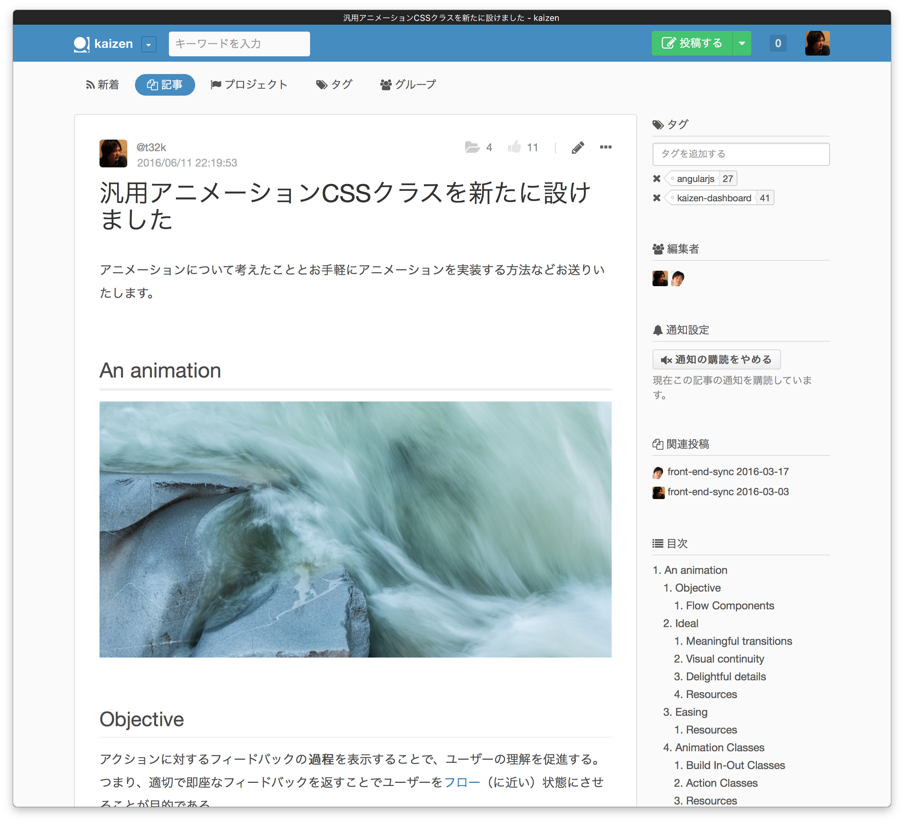
</script>

<script layout="bullets" type="text/x-markdown">
## Animation Classes

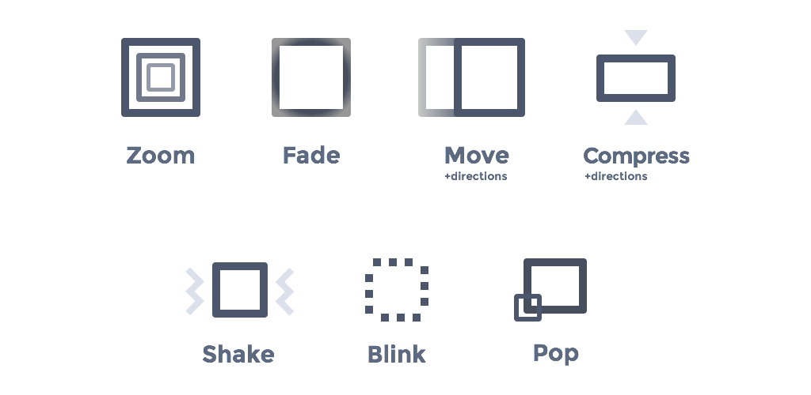
</script>

<script layout="bullets" type="text/x-markdown">
## [ngAnimate](https://docs.angularjs.org/api/ngAnimate)
`ng-show/ng-hide`や`ng-repeat`ディレクティブ等が指定している要素に対して、modelに変更があるとAngular側でアニメーションのトリガーを発火してくれる。
同様の機能はReactやVue.jsでもある。

- [アニメーション | React](https://facebook.github.io/react/docs/animation-ja-JP.html)
- [トランジション - vue.js](https://jp.vuejs.org/guide/transitions.html)
</script>

<script layout="code" type="text/x-markdown">
```scss
// -----------------------------------------------
// Build In-Out Animation
// -----------------------------------------------
$ngDuration: 300ms;
$cubicEaseInOut: cubic-bezier(0.645, 0.045, 0.355, 1);

.a-fade {
  transition: opacity $ngDuration $cubicEaseInOut;

  &.ng-hide, &.ng-enter,
  &.ng-leave.ng-leave-active {
    opacity: 0;
  }

  &.ng-enter.ng-enter-active,
  &.ng-leave {
    opacity: 1;
  }
}
```
</script>

<script layout="bullets" type="text/x-markdown">
## Build In-Out Classes

- .a-zoom
- .a-fade
- .a-move-[top|right|bottom|left]
- .a-press-[top|right|bottom|left]
</script>

<script layout="bullets" type="text/x-markdown">
## Action Classes

- .a-shake
- .a-blink
- .a-pop
</script>

<script layout="bullets" type="text/x-markdown">
## The Namespaces

- `a-` Animation
- `c-` Compoentnt
- `is-, has-` UI States
- `js-` JavaScript
- `u-` Utility

<small>[More Transparent UI Code with Namespaces – CSS Wizardry](http://csswizardry.com/2015/03/more-transparent-ui-code-with-namespaces/)</small>
</script>

<script layout="bullets" type="text/x-markdown">
## Durations

<a href="https://material.google.com/motion/duration-easing.html">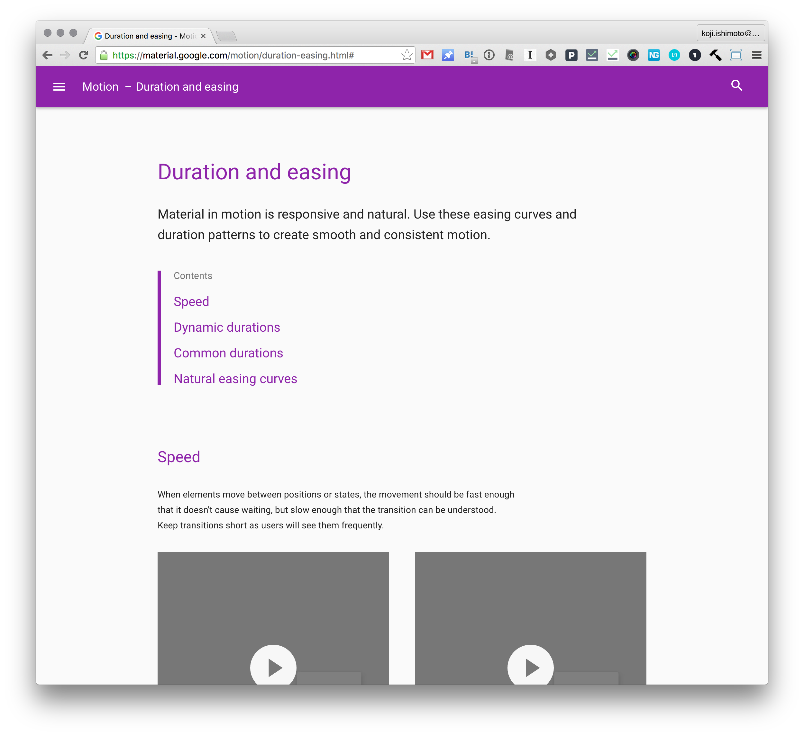</a>
</script>

<script layout="bullets" type="text/x-markdown">
## Easings

<a href="http://easings.net/">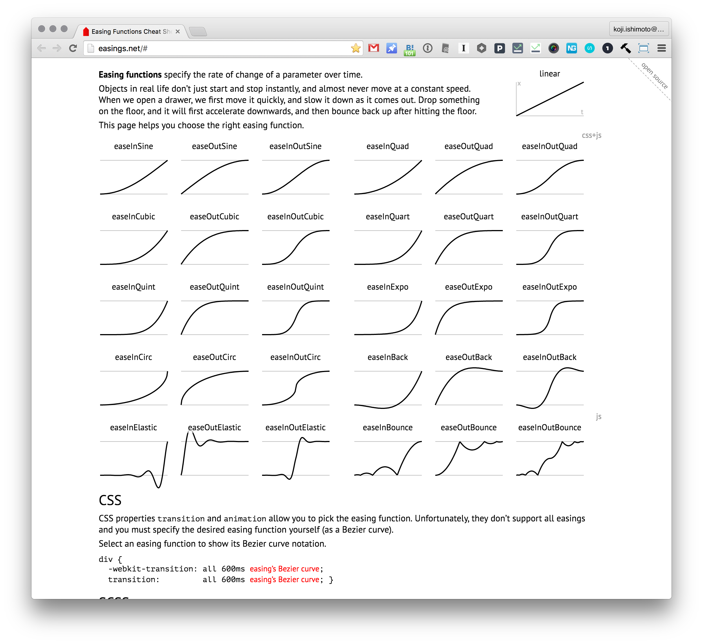</a>
</script>


<script layout="bullets" type="text/x-markdown">
## Samples

<a href="http://codepen.io/t32k/pen/obroxj">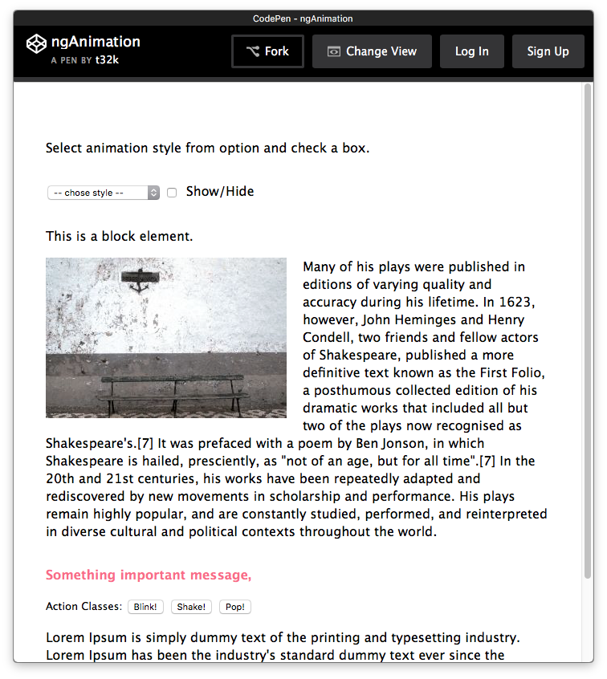</a>
<a href="http://codepen.io/t32k/pen/KzKLKL">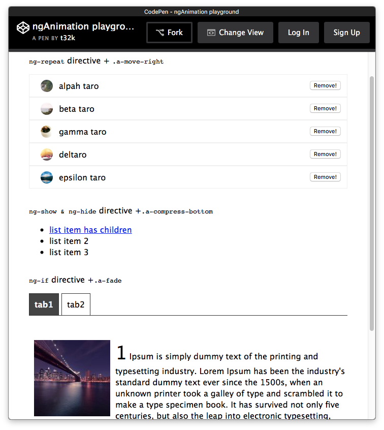</a>
</script>

<script invert layout="cover" type="text/x-markdown">
# 実践例
</script>

<script layout="cover" type="text/x-markdown">
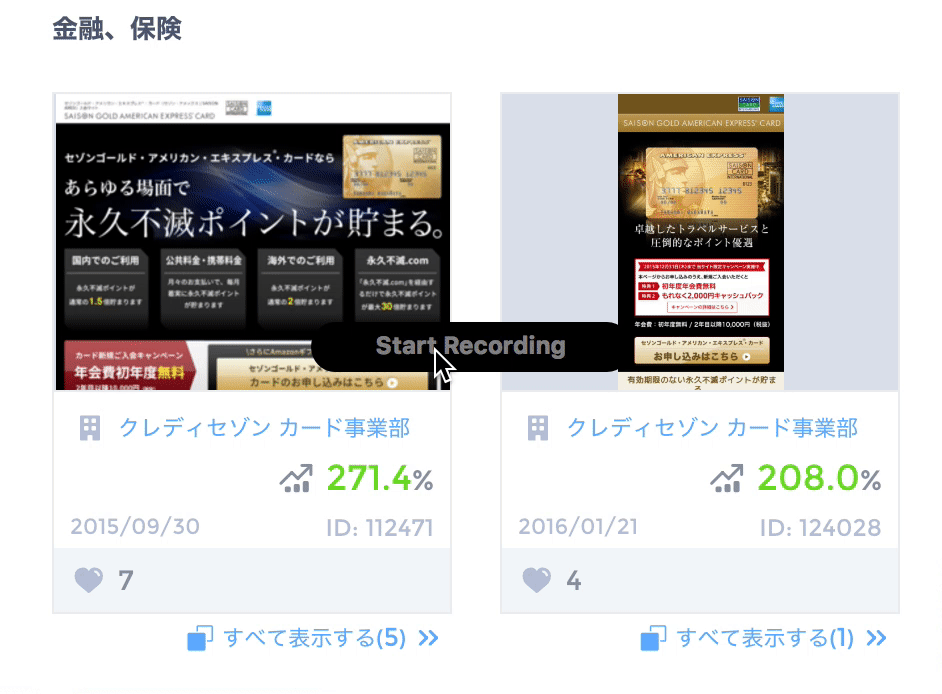

デザイン案いいね！アニメーション
</script>

<script layout="cover" type="text/x-markdown">


同オファー複数デザイン案の展開トランジション
</script>

<script layout="cover" type="text/x-markdown">


ディレクション割り当てインタラクション
</script>

<script layout="row" type="text/x-markdown">
<div style="flex-basis:30%;margin-right:0;">
<a href="https://www.amazon.co.jp/dp/4873116597/?tag=warikiru-22">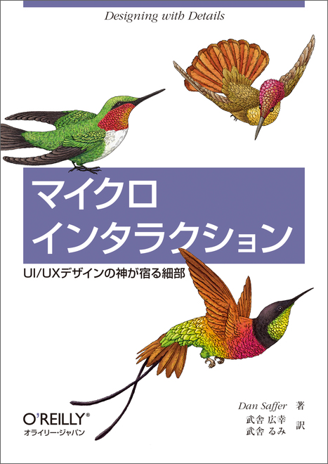</a>
</div>
<div style="flex-basis:70%">
<h2 style="text-align:left">マイクロインタラクションの構造</h2>
<ul style="margin: 30px 100px;list-style-type:decimal;">
<li>トリガー <small style="font-size:50%">マイクロインタラクションを開始させる</small></li>
<li>ルール <small style="font-size:50%">マイクロインタラクションの動作を定義する</small></li>
<li>フィードバック <small style="font-size:50%">ルールをユーザーに明示する</small></li>
<li>ループとモード <small style="font-size:50%">マイクロインタラクションのメタルール</small></li>
</ul>
<p><small>― <a href="https://www.amazon.co.jp/dp/4873116597/?tag=warikiru-22">マイクロインタラクション ―UI/UXデザインの神が宿る細部</a></small></p>
</div>
</script>


<script layout="bullets" type="text/x-markdown">
## 実装したら共有

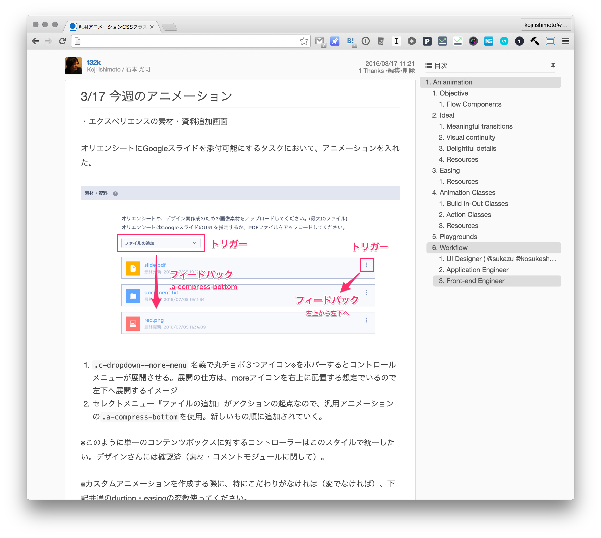
</script>

<script layout="bullets" type="text/x-markdown">
## 作りこむということ | MOL

<a href="http://t32k.me/mol/log/craftsmanship/">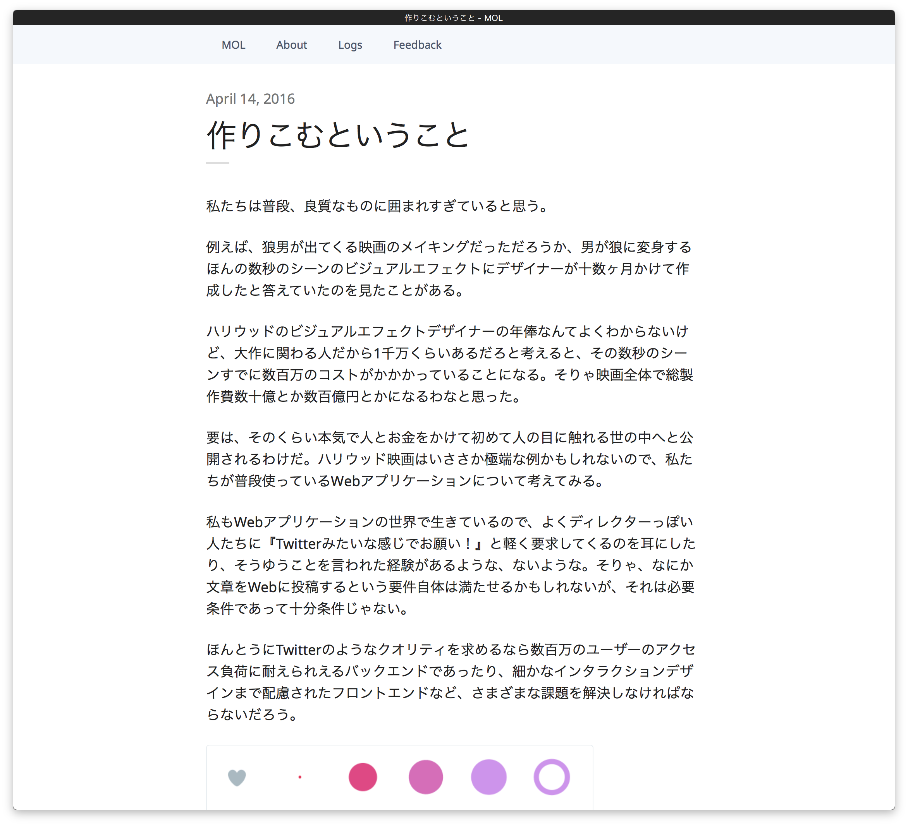</a>
</script>

<script invert
	      layout="cover"
	      type="text/x-markdown"
	      backface="./img/mise.jpg"
	      backface-filter="blur(2px) brightness(0.6)">
# God is in the details

by Ludwig Mies van der Rohe
</script>

<script invert
        layout="bullets"
        type="text/x-markdown"
        backface="./img/cats.gif"
        backface-filter="blur(2px) brightness(0.4)">
# まとめ

- 小さなところ・できるところから始める
- 名前が決まっていると説明しやすい
- 開発環境系で消耗したので、UI系もう少し頑張っていきたい
</script>

<script invert
	      layout="cover"
	      type="text/x-markdown"
	      backface="./img/thanks.jpg"
	      backface-filter="blur(2px) brightness(0.8)">
# Thanks!
- [t32k.me](http://t32k.me/)
</script>

<script invert
        layout="bullets"
        type="text/x-markdown"
        backface="./img/job.png"
        backface-filter="blur(2px) brightness(0.2)">
## Frontend Engineer 募集中！

- 自らの活動をオープンにし、自分の意見を率直に言える人
- 同僚を尊敬し、お互い協力しあえる人
- 一度だけでうまくいくことを期待せず何度でも試みることができる人
- 技術だけでなく、事業目的まで含めて総合的に考えられる人
- 自身が中心となって事業/プロジェクトを推進していける人

[Kaizen Platform, Inc. - Frontend Engineer](https://jobs.lever.co/kaizenplatform/8a4371bd-8a4f-465c-81b1-8a28b9851a48)
</script>

<script invert layout="bullets" type="text/x-markdown">
## Furthermore Information

- [Material motion - Google design guidelines](https://material.google.com/motion/material-motion.html)
- [UI Animation Monthly | Val Head](http://valhead.com/newsletter/)
- [Visual Continuity](http://www.slideshare.net/newestprod/visual-continuity)
- [Easing Functions Cheat Sheet](http://easings.net/#)
- [daneden/animate.css](https://github.com/daneden/animate.css)
</script>

<script src="https://cdnjs.cloudflare.com/ajax/libs/highlight.js/8.9.1/highlight.min.js"></script>
<script src="/slides/src/talkie.min.js"></script>
<script>Talkie({wide:true});</script>
</body>
</html>
